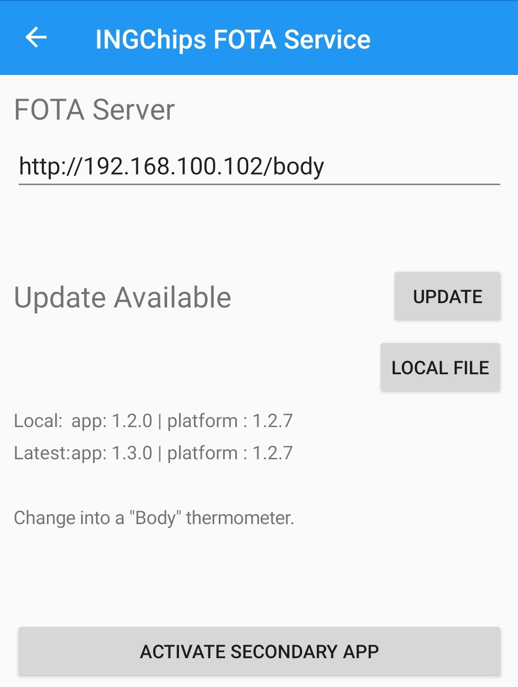

使用 ING918 系列芯片 SDK 里的 ingWizard 可以为应用轻松加入空中固件升级（FOTA）功能， 用户手册的教程部分也详细介绍了具体的实现方法。本文是 FOTA 完整功能的快速演示。
环境准备
-
下载/安装 ING BLE App
说明: 需要 v1.3 以上版本。iOS 尚未更新，可使用 Android 版本，或者自行编译 iOS/Windows 版本。 -
烧写测试程序
解压测试程序升级包，用 Downloader 打开
full_app文件夹下的flash_download.ini，然后烧录到开发板。 -
网络准备
进行空中升级时，ING BLE 需要联系升级服务嚣获取信息，所以需要保证 ING BLE 与服务器之间的 TCP/IP 网络畅通。 如果自行编译 Windows 10 版本的 ING BLE 测试程序，可在同一机器上启动 HTTP 服务器。 对于使用手机的情况，可以选用以下任一方法配置网络：
-
手机与服务器接入同一 WLAN （推荐）
-
服务器开启 WIFI 热点，手机接入该热点
-
手机开启 WIFI 热点，服务器接入该热点
-
服务器与手机之间通过 Internet 连接（不推荐）
-
-
准备升级服务器
这里使用 Python 内置的 HTTP 服务器作升级服务嚣。切换到解压出的文件夹，启动服务器，命令如下（各平台即可，以 WSL 为例）：
$ ls -a . .. body full_app toe $ sudo python -m SimpleHTTPServer 80 Serving HTTP on 0.0.0.0 port 80 ...检查服务器是否正常工作（假设服务器 IP 地址为 192.168.100.102。下同）：
$ curl http://192.168.100.102/body/latest.json { "app": [1,3,0], "platform": [1,0,5], "package": "v1.zip" }
演示
用 ING BLE 连接到名为“ING Thermometer”的蓝牙设备，查看温度计显示为“Body”状态。
-
部分升级到“Toe”版本
进入 FOTA 服务，在升级服务 URL 里填入“http://192.168.100.102/toe”，点击“Re-check”按钮，出现版本升级提示信息。 点击“Update”按钮完成升级。由于此时 platform 版本一致，故升级过程中只升级了 App Bin，速度很快。
重新连接到“ING Thermometer”，查看温度计显示为“Toe”状态。
-
部分升级回退到“Body”版本
再次进入 FOTA 服务，在升级服务 URL 里填入“http://192.168.100.102/body”，重复上述步骤，可将版本回退到“Body”版本。

-
切换到辅助 FOTA 程序
再次进入 FOTA 服务，点击“Activate Secondary FOTA”按钮重启开发板并进入 FOTA 辅助 App。
重新扫描，可发现名为“ING Secondary FOTA”的设备：

-
完整升级
连接到名为“ING Secondary FOTA”的设备，进入 FOTA 服务，在升级服务 URL 里填入上述任何一个 URL，重复上述步骤， 同样可以进行升级。
出于演示目的，辅助 FOTA 程序故意上报了错误的 platform 版本号，故升级过程会同时升级 platform 和 App Bin， 需要的时间明显多于部分升级。